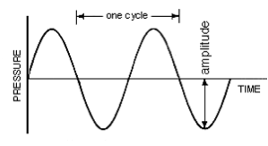
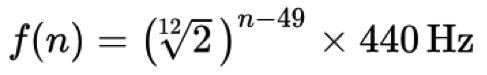
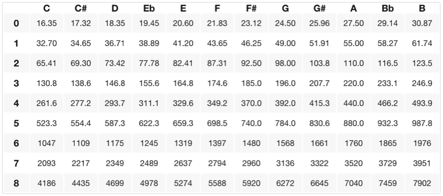

What is frequency? Frequency is “how often” something happens. Since sound is vibrations, we use frequency to describe how often something is vibrating. Frequency is measured in Hertz (Hz), which is simply “how often per second.” So, something oscillating at 1 Hz is vibrating once every second. A “complete” vibration is called a “cycle,” measured at one full peak and trough of a wave (i.e. the maximum distance or ‘amplitude’ above the middle or ‘0’ point, represented on the x-axis). (In the early days of electronic music, the terms “cycles per second” [cps] was used instead of Hz, which you may see on many old/vintage synthesizers today).
 https://www.sfu.ca/sonic-studio/handbook/Sine_Wave.html
The above picture is a sine wave––the purest representation of a single frequency or vibration. The time it takes for the wave to complete one cycle is the wave’s frequency (again, “how often” it is vibrating). More vibrations per second (i.e. faster oscillations) produce ‘higher’ sounding frequencies and fewer vibrations per second (i.e. slower oscillations) produce ‘lower’ sounding frequencies. Humans can only hear frequencies roughly between 20Hz - 20,000Hz (20kHz) (for more see https://en.wikipedia.org/wiki/Hearing_range).
In music, the terms frequency, pitch, and tone are related. A tone is a sound with one or more identifiable frequencies. Frequency is the empirical measurement of a physical phenomenon, defined as the cycles (of vibration) per second. Pitch is a subjective perception of the relative height of a tone, as in 'high' or 'low' (for more on this see Conceptual Models and Cross-Domain Mapping by Lawerence Zbikowski http://zbikowski.uchicago.edu/pdfs/ZbikowskiConceptualmodels_1997.pdf ).
While frequencies are represented with numbers (Hz), pitch is represented with letters. For example, if you have ever heard an orchestra ‘tune’ at the beginning of a concert, a single player (usually an oboe or violin) plays an ‘A’ measured at 440Hz (referred to as A440). With pitch, we only use the letters A, B, C, D, E, F, and G (additional symbols are used to raise or lower them, more on this later). These pitches repeat every 8 notes, called an octave. In order to differentiate between which octaves we are referring to when talking about pitch, a number is added after the letter. For example, A440(Hz) is called A4 in terms of pitch. Don’t get confused here though, the 4 refers to the octave in which we are referring to that particular A (specifically on the piano)––it is just a coincidence that the frequency happens to be 440, the 4 does not specifically refer to that. But why then is A4 440 Hz you may ask…well there’s a rather complicated answer to that question, but ultimately it is indeed arbitrary. Simply put, a bunch of people got together in the 19th century and decided that was the case. (If you’d like to know more about the topic do some research on A440 or pitch/tuning standards https://en.wikipedia.org/wiki/A440(pitchstandard)).
It is important to note that frequency is absolute, while pitch is relative (these relative changes are referred to as ‘tuning’). We use pitches to describe their relationship (i.e. ratio) with other pitches and analyzing those relationships is the basis of ‘music theory’. In general, we have agreed that A4 is defined as the pitch whose frequency is 440 Hz (an absolute reference). We can then determine the ‘pitch’ or ‘tuning’ of all the other notes in relationship to that using a particular tuning formula.
One very important aspect of all music theory is that octaves are specifically defined as ‘doubling’ or ‘halving’ a pitch’s frequency. For example, the frequencies 220 Hz, 440 Hz, and 880 Hz are all A’s, but exist in different octaves: A3, A4, and A5 respectively. In Western music theory, we have generally (and frankly, arbitrarily) agreed that within each octave there are 12 equal subdivisions or pitches. So how do we determine where these other notes are ‘tuned’ in relationship to that A440? Well, after many years of experimentation it was decided that the following formula determines the relative relationship between pitches (more specifically, the frequency f of the nth key on a standard piano):
 https://en.wikipedia.org/wiki/Pianokeyfrequencies
Simply put, each tone/pitch in Western classical music tuning is derived by starting with A440 as a ‘reference tone’ and then multiplying or dividing by the twelfth root of two (~1.059463) to get to another tone above or below that reference tone. The number 49 in this case is arbitrary (A4 is the 49th key on a standard piano keyboard) and in computer music we typically use MIDI numbers for our calculations––A440 is MIDI key number 69 for example (more on MIDI standards in a separate lesson).
It should be noted that this formula represents only one particular style of ‘tuning’ that exists within the Western classical music tradition and is used in general as the ‘world standard’ when talking about pitch/frequency/tonal relationships in general even though these relationships are arbitrary and other tuning systems exists within different cultures and traditions. This system retains an important ‘rule’ that octaves are defined as exact doubling or halving of frequencies while maintaining the same (pitch) ratios of dividing each octave into 12 equal parts. We call this tuning system 12-tone equal temperament and it serves as the basis for most of the world as a fundamental and agreed-upon tuning system, especially when it comes to the standardization of electronic musical equipment. (All pianos are tuned in this system an all MIDI data follows this general principle).
In music terminology, we describe pitches (or tones) as ascending or descending in terms of ‘steps’. There are two kinds of steps: half steps and whole steps (also called semitones or whole tones). Raising notes by one half step (i.e. semitone) is indicated with a ♯ symbol called a ‘sharp’ (number or hashtag symbol) and lowering tones by a half step is indicated with a ♭ symbol called a ‘flat’ (a lowercase ‘b’ is also frequently used). You can think of semitones or half steps as the minimum distance between two adjacent piano keys or guitar frets.
To get the frequency a semitone up from A4 we multiply 440 Hz by the twelfth root of two to give us ~466.2 Hz, giving us an A# (or Bb). A# and Bb are called ‘enharmonic notes’, or pitches that are technically the same frequency but could be ‘spelled’ differently depending on the ‘key’ or musical context we are specifically talking about (more on this in a separate lesson). To get the frequency a whole step up from A4 we can multiply 440Hz twice by the twelfth root of two giving us ~493.9 Hz or B4. Below is a table of all the specific frequencies with their pitch/octave relationship (note names are on the x-axis and octave numbers are on the y-axis).
 https://www.seventhstring.com/resources/notefrequencies.html
This collection of ‘twelve notes per octave’ is called the chromatic scale. A 'scale' is a collection of notes in ascending/descending order starting/ending on a fundamental frequency or pitch. A chromatic scale starts on any pitch and ascends (or descends) by 11 subsequently adjacent half steps (semitones) from its fundamental. On the chart above, you can find the specific frequencies or notes/pitches of any chromatic scale by starting on a given note (the fundamental) and counting up or down 11 semitones (adjacent pitches).
If you noticed, some of the notes in the above chart are ‘spelled’ with a # (sharp) while others are spelled with a b (flat). Theoretically, any note can be raised or lowered a half or whole step/tone by adding one of those symbols after it. However, there are conventions that certain notes are ‘spelled’ a particular way given the prevalence and predictability of Western music theory practices. Regarding ‘enharmonic spellings’ of notes and pitches (notes that are the same frequency but represented as different pitches), the above table represents the most common spellings of notes and pitches with regard to traditional practices of ‘key signatures’ in music, but does not include all the possibilities. The following notes are common enharmonic spellings (slashes indicate notes/pitches are the same frequency but can be represented or ‘spelled’ as different pitches):
C#/Db D#/Eb F#/Gb G#/Ab A#/Bb
Of course, theoretically any note can be raised or lowered one half step (semitone) or even a whole step (whole tone) with a # or b symbol and some more advanced music theory gets into what are called double-flats and -sharps. Without getting too complicated or deep into it, all scales or musical keys are a collection of half steps and whole steps and the spelling of those pitches gives the performer clues about the relationships (i.e. ratios) between the pitches the composer is using.